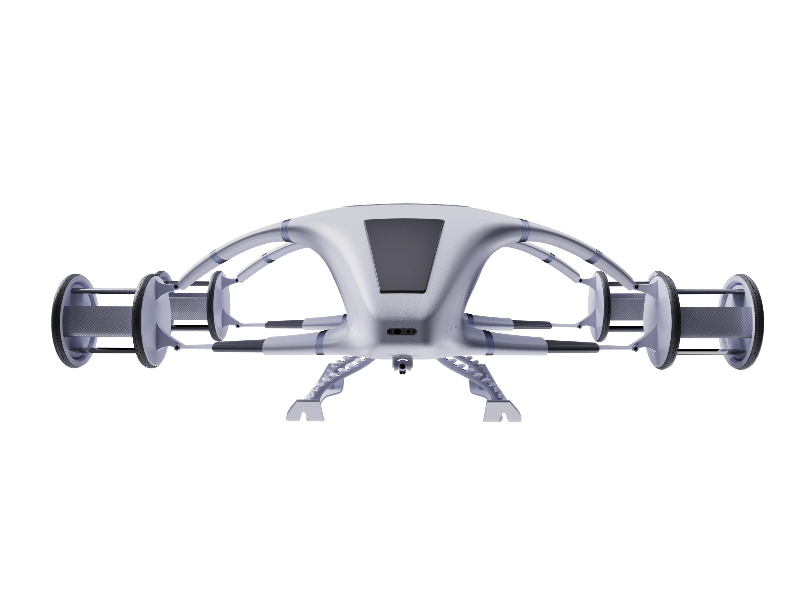
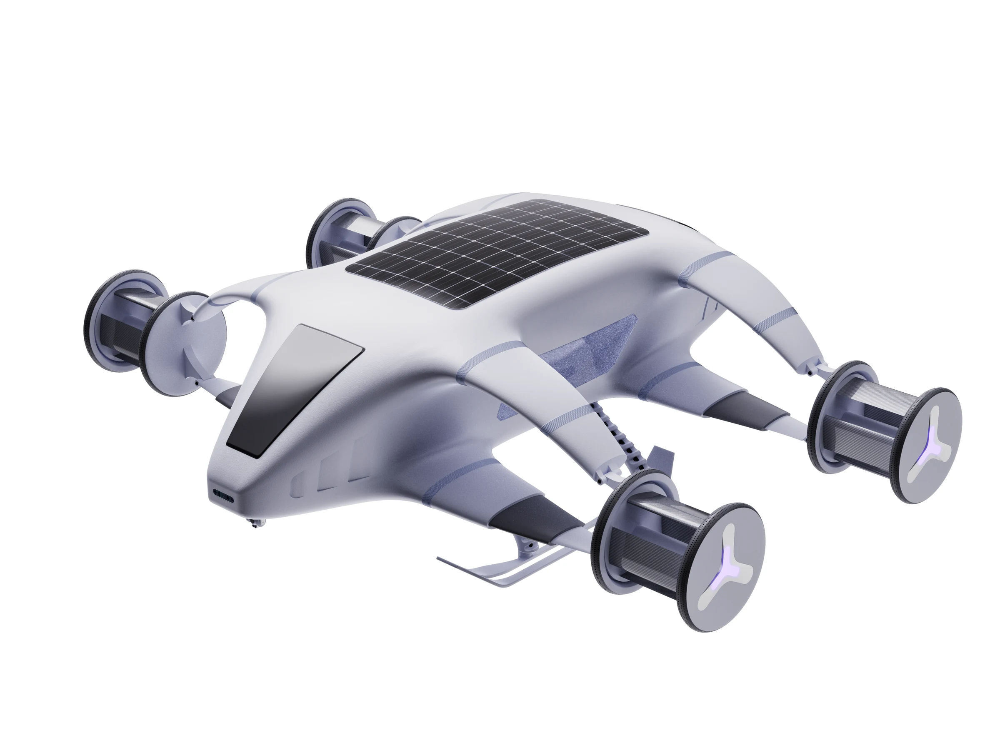
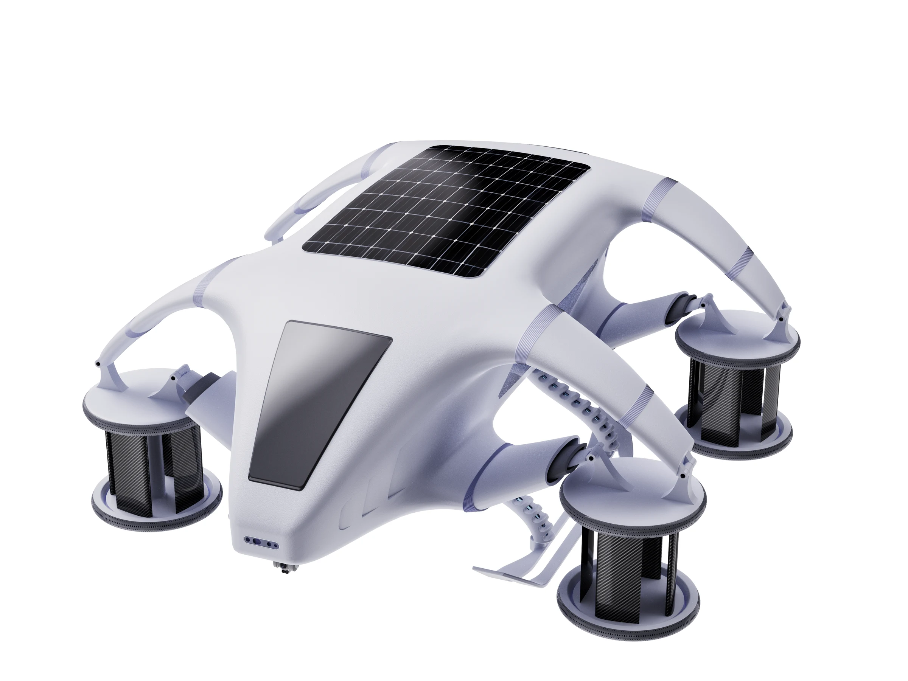
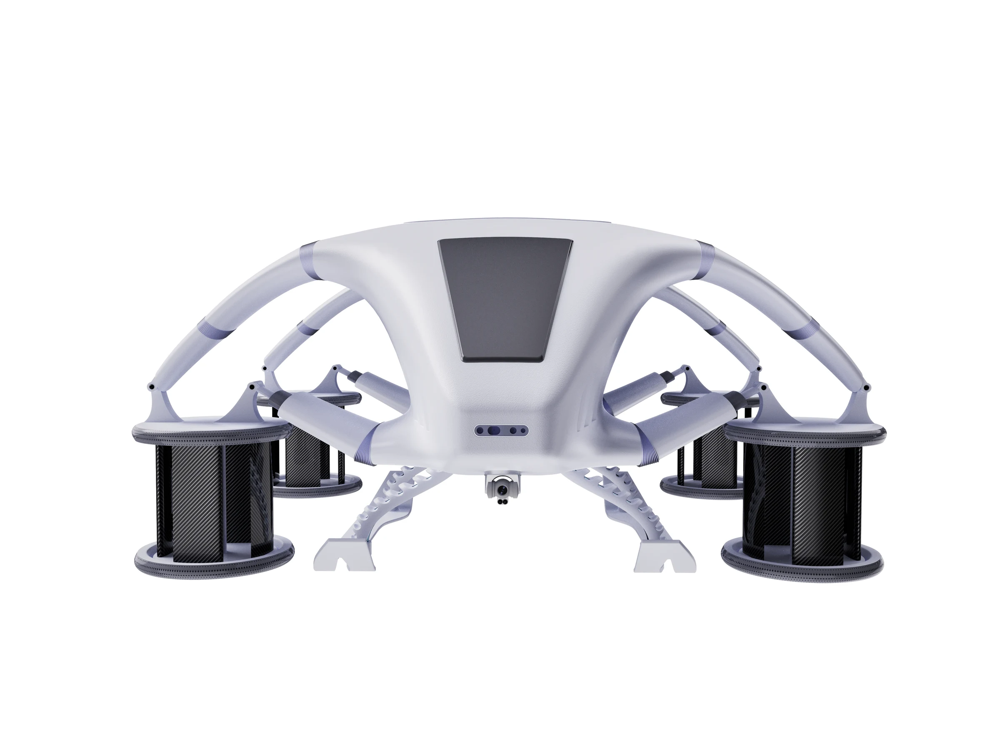
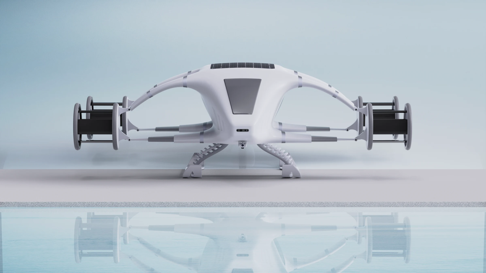
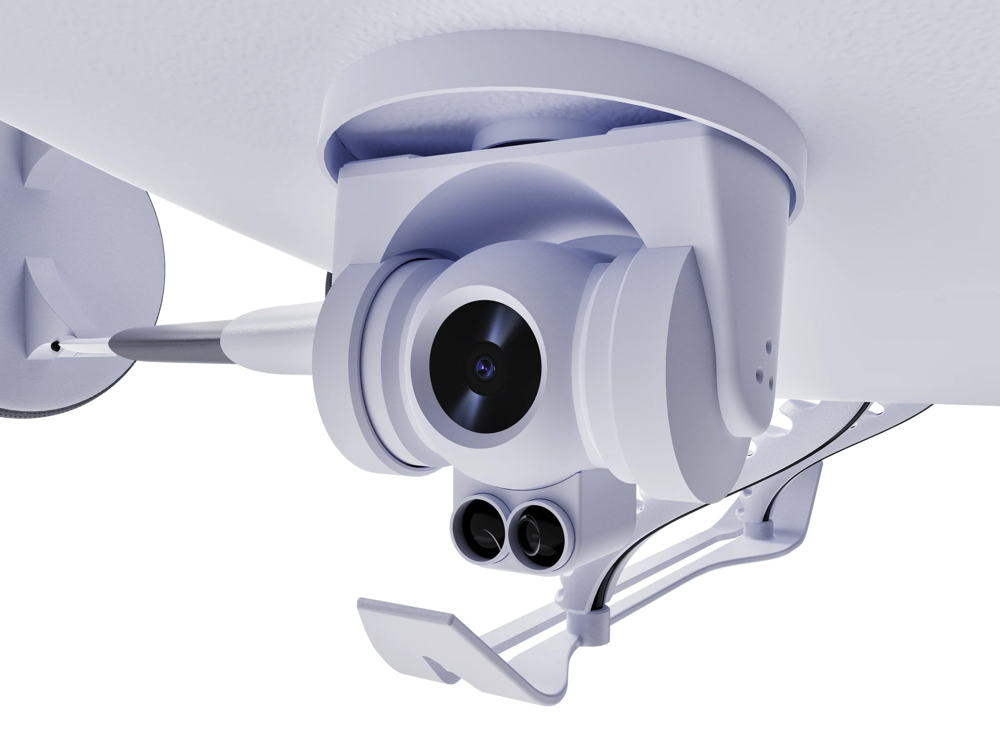
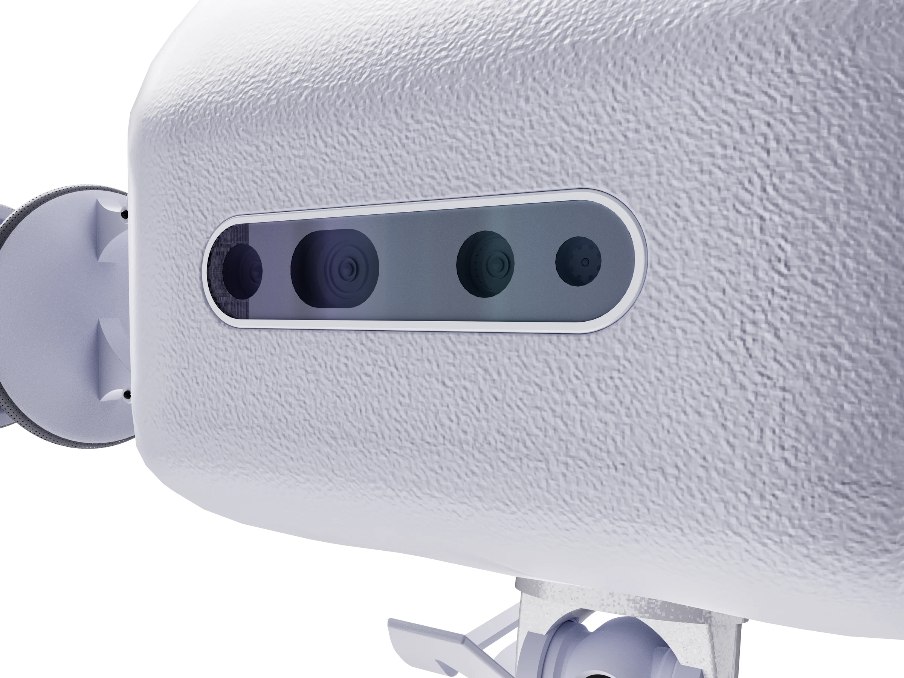
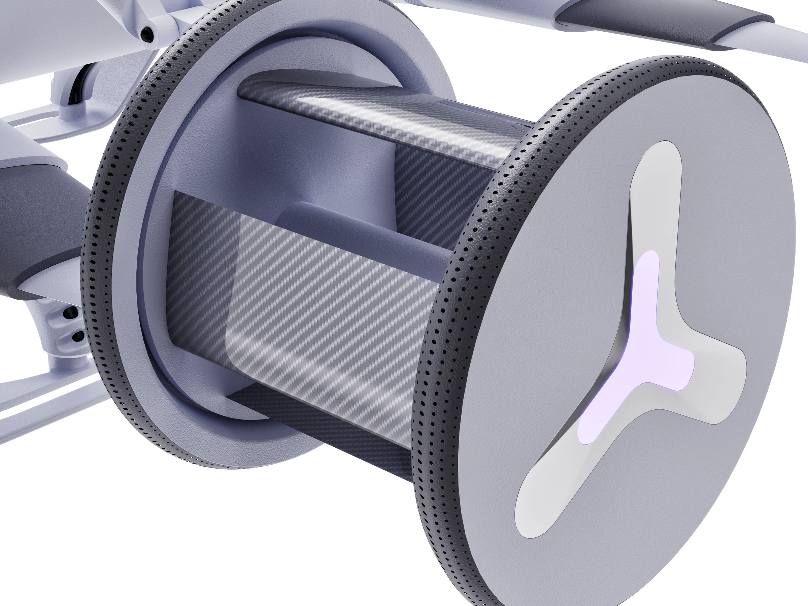
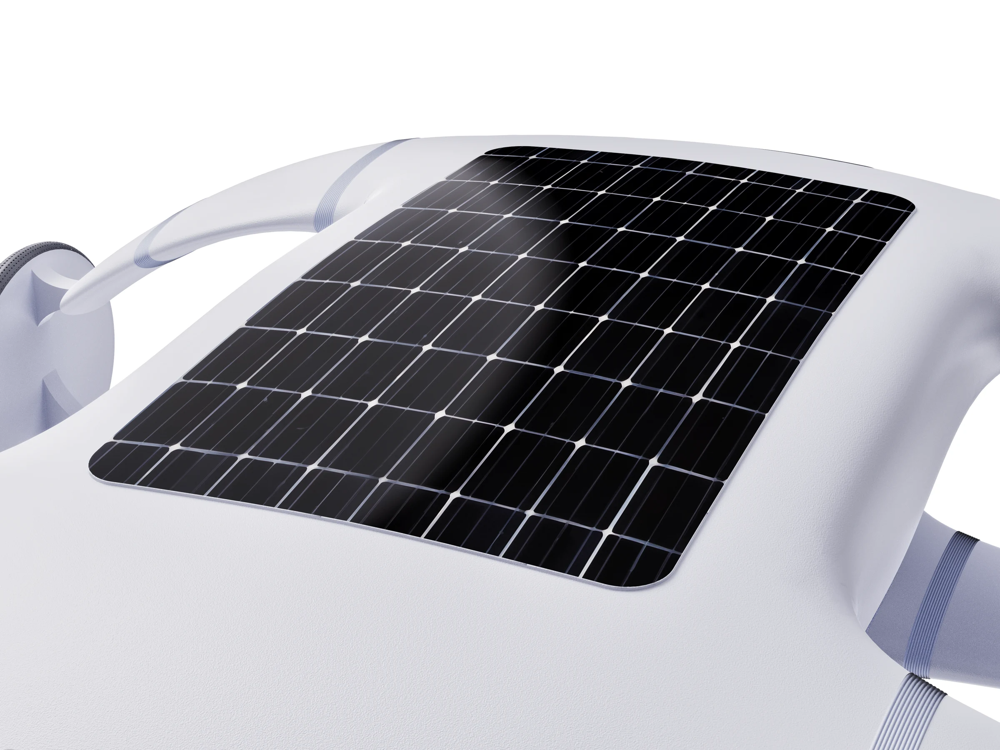
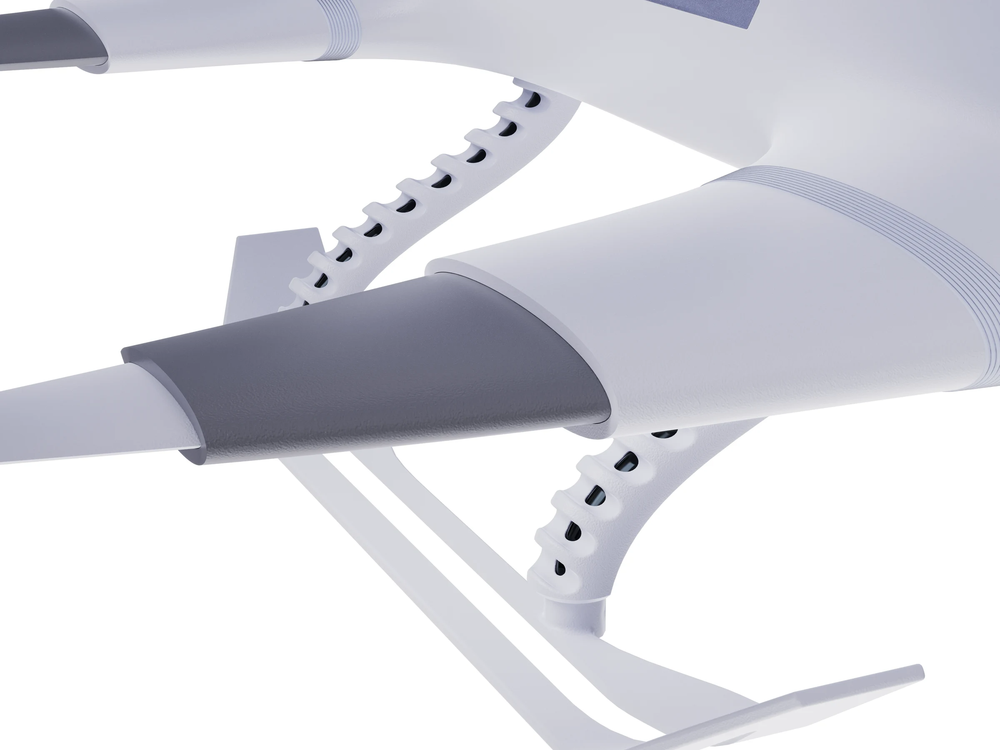

雪山场景 · 海空两用勘探作业

正面视角 · 太阳能板与传感系统

斜侧视角 · 流线型机身轮廓

俯视视角 · Cyclo Rotor推进布局

侧面视角 · 涵道式旋翼结构

全景展示 · 未来勘探平台
Concept Design · 2025
基于 Cyclo Rotor 推进系统的海空两用勘探无人机——灵感源自"飞鸟与鱼"，一套推进系统实现空中飞行与水下潜航无缝切换。





Motion
Design Details





Technology Foundation
基于奥地利 Cyclo 科技公司的矢量推进技术，Cyclo Rotor 可实现 360° 推力方向瞬时切换，悬停，前飞，侧飞均无需改变机体姿态。相比传统旋翼，更紧凑、更灵活，天然适合需要精准姿态控制的两栖场景。
Cyclo Rotor 从轮船 VSP（Voith-Schneider Propeller）推进器改进而来。VSP 推进器已在船舶领域验证了水下矢量推进的可靠性——同一套机构在空中作为旋翼、在水中作为桨叶，实现推进系统的海空复用。
两栖无人机的核心挑战不是"能不能飞+能不能潜"，而是推进系统的海空复用。传统方案需要两套独立推进系统（旋翼+螺旋桨），导致结构复杂、重量翻倍。Cyclo Rotor 的独特优势在于一套机构双介质工作，从原理层面解决了两栖推进的工程难题。
Design Process
飞鸟掠过海面，鱼群穿梭水下——同一片空间，两种存在方式。设计灵感源于自然界的海空双栖生物，追求形态上对两种介质的兼容性。
初期探索 Cyclo Rotor 如何在空中和水下两种介质间切换——桨叶角度、转速、密封方式的转换机构设计，确保切换过程快速可靠。
流线型机身兼顾空气动力学和水动力学，减少两种介质下的阻力。模块化结构便于维护和功能扩展，太阳能板提供备用能源。
Design Highlights
Cyclo Rotor 推进系统在空中作为旋翼提供升力，入水后自动切换为水下推进模式。无需两套独立系统，结构精简、重量可控。
前后探测器 + 俯视探测器三维度覆盖，扩大探测领域。空中俯瞰大范围扫描，水下近距离精细勘探，一套平台完成双场景任务。
机身顶部集成太阳能板，在空中飞行时持续补充能源。延长续航时间，保障长时间勘探任务的能源安全。
机身造型同时优化空气动力学和水动力学性能——空中减少风阻，水下降低水阻。形态源自"飞鸟与鱼"的自然仿生。
Problems & Solutions
传统方案需要两套独立推进系统，导致结构冗余、重量大、可靠性低。如何用一套系统实现双介质推进是核心工程难题。
从空中到水下的转换过程涉及密封、浮力、推进模式切换等多个变量，需要结构设计保证转换过程快速、可靠、可逆。
目前市场上尚无引用 Cyclo Rotor 推进系统的无人机产品，海空两栖成熟产品极少。需要从零构建设计语言和使用场景。
利用 Cyclo Rotor 矢量推进特性，空中作为旋翼提供升力和姿态控制，水中切换为桨叶推进。一套机构、两种模式，从原理层面解决推进复用。
设计可调节桨叶角度和密封舱体，海空转换时桨叶自动调整攻角和转速。机身密封结构保障电子设备水下安全，浮力设计支持水面起降。
定位为多地形、多场景勘探平台——海洋勘测、灾后搜救、水下巡检、空中侦察。三向探测系统 + 太阳能备用能源，覆盖长时间多场景任务需求。
Project Summary
Antarikha 不只是概念——它是对 Cyclo Rotor 推进系统在无人机领域应用的可行性探索。从"飞鸟与鱼"的自然灵感出发，用工程逻辑回答"海空两栖"的设计命题。